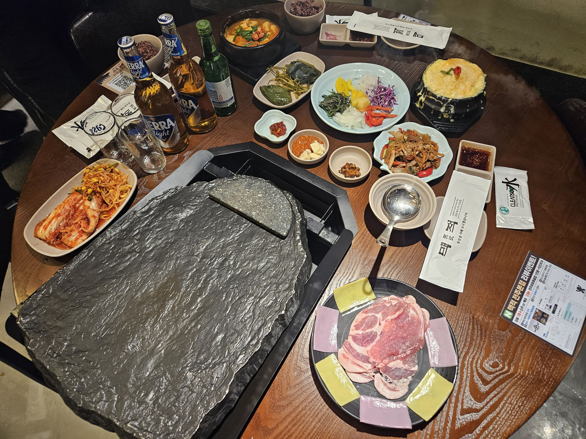
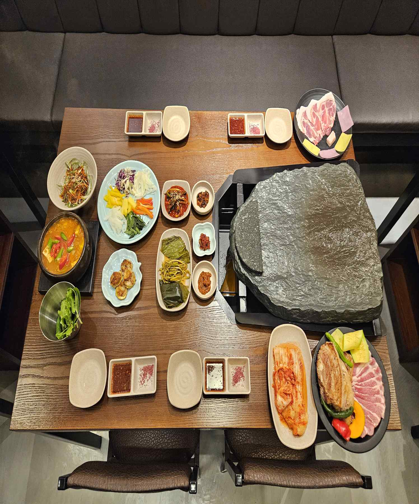
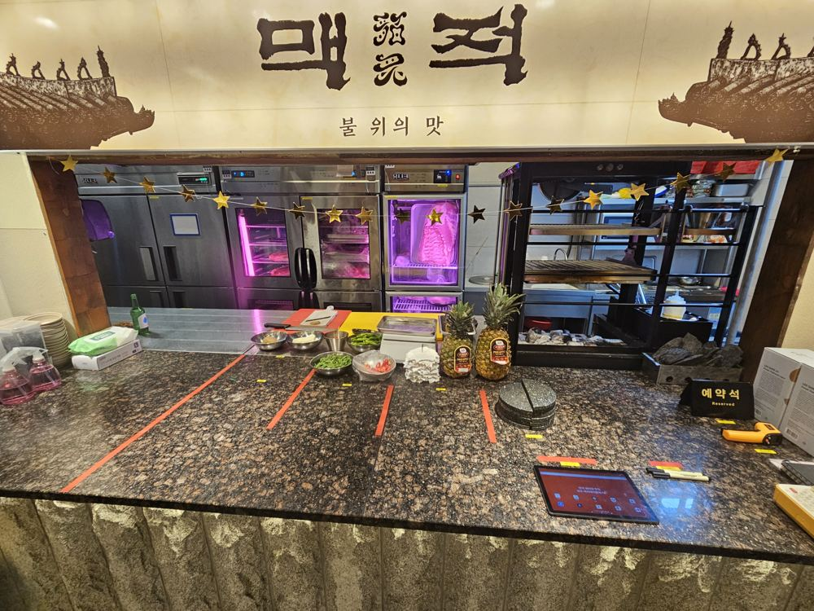

맥 세트 600g
창호지목살 + 숙성세겹살 + 등심기왓살 + 토장찌개
67,000원
전주 신시가지 전통 돼지구이 전문점
정성을 다해 모시겠습니다
가장 맛있는 순간을 만들어드리는 직접 그릴링으로 손님을 맞이합니다.
전북특별자치도 전주시 완산구 홍산북로 60-22 1층 101호

창호지목살 + 숙성세겹살 + 등심기왓살 + 토장찌개
67,000원

창호지목살 + 숙성세겹살 + 토장찌개
45,000원

전주의 창호지처럼 얇게 저민 목살을 떡쌈과 싸먹을 수 있도록 고안
16,000원

1+등급 선별 숙성된 마블고기를 15일간 숙성시킨 진품 삼겹살
15,000원

전주의 한옥 기와를 형상화하여 기와모양으로 자른 등심덧살
19,000원

5가지의 된장을 배합한 시그니처 된장찌개. 우렁·차돌·냉이 중 선택
7,000원
주막에서 먹던 그 맛을 현대에서 구현한 김치말이 국수
6,000원

전통 오방색 쌈채소. 아래 상자에서 한 쌈 싸 보세요
3,000원

K-후식. 전주의 비빔밥을 형상화한 후식
9,000원
오방쌈채는 전통적인 오방색을 활용하여 만든 쌈채소로 청(깻잎), 적(파프리카·당근), 황(파인애플), 백(무채·양파), 흑(보라양배추)
조각을 끌어 고기 위에 올려 보세요. 눌러도 올라갑니다.
0 / 5
청·적·황·백·흑 — 오방쌈채 3,000원
주물판 → 참숯 → 돌판의 3단 마이야르 조리기술. 육즙·불향·식감의 조화를 위해 세 번 굽습니다.
1주물판

2참숯
3돌판
지역특산물로 만든 특제 된장소스를 발라 초벌하고, 전통 돌판에 굽습니다. 그릴에 초벌하는 모습은 바 형식의 라이브 키친에서 볼 수 있습니다.

맥적(貊炙)은 고구려 고분벽화 속, 불 위에 고기를 올려 굽던 한국 고기구이의 원형에서 시작되었습니다.
그림: 안악3호분 부엌 벽화(357년), 공개 도메인붉은 노을 아래 하루의 무게를 내려놓는 자리, 고기 한 점과 술 한잔에 위로가 스미는 이 곳은 한국인의 사랑방입니다.

진경산수화 대형 벽면

핀 조명 아래 원형 테이블

초벌을 볼 수 있는 라이브 키친

고재 기둥과 주황 한지 조명의 입구
전통돼지구이 「맥적」을 현대적으로 복원하고, 전주 지역 식문화 콘텐츠를 결합한 K-BBQ 브랜드입니다.
전통의 품격과 현대의 감각을 잇는 전주 대표 고깃집, 세계가 주목하는 로컬 다이닝 경험
맥적 전주본점 운영
지금직영으로 검증한 모델을 가맹으로
준비 중창호지목살·세겹살 15일 숙성·등심기왓살 정형, 고기와 소스를 묶은 BBQ 패키지
준비 중전통장류로 만든 특제소스(마늘 육장·보리쌈장 등), 전주비빔볶음밥 소스·된장찌개 소스. 매장 상업용 주방에서 직접 제조
준비 중맥적은 고구려 시대부터 전해진 원초적 구이의 정신을 품고, 전주라는 역사와 문화의 도시에서 이를 현대적으로 재해석한 프리미엄 전통 BBQ 브랜드입니다.
맥적에서의 시간이 어떠셨는지 남겨 주세요.

전북특별자치도 전주시 완산구 홍산북로 60-22 1층 101호 (효자동3가)
| 월·화 | 16:00 – 03:00 |
|---|---|
| 수–토 | 16:00 – 04:00 |
| 일 | 16:00 – 01:00 |
| 공휴일 | 17:00 – 04:00 |
라스트오더는 마감 1시간 전입니다.
주차 자체 주차 공간 없음, 홍산라이브 공영주차장 1시간 무료 지원
편의 예약 가능, 남녀 화장실 분리
문의 주시면 절차를 안내드립니다.